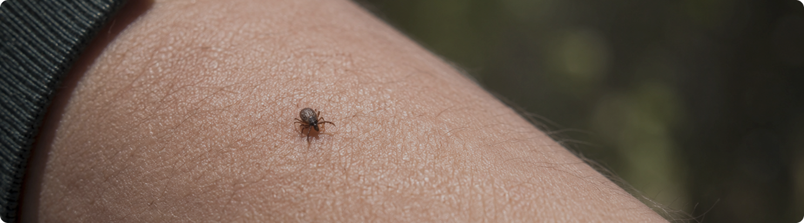
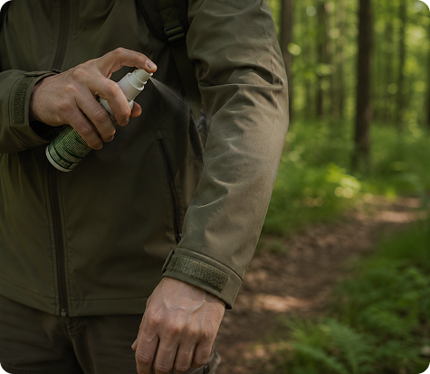
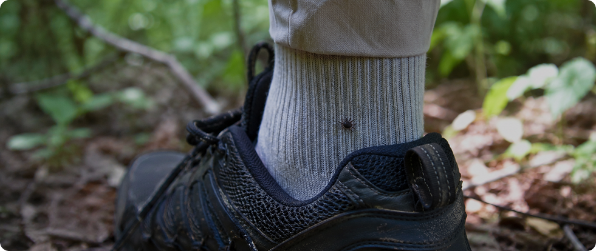

Клещи — одна из самых частых причин тревоги у людей, которые только начинают гулять по лесу. На самом деле риск легко контролировать, если понимать, где клещи встречаются чаще всего и что делать после возвращения домой.
Они не прыгают с деревьев и не охотятся на человека. Обычно клещ цепляется за одежду в высокой траве или кустарнике и некоторое время ищет подходящее место на теле.
Почему клещи оказываются на одежде
Клещи не прыгают с деревьев и не преследуют человека. Обычно они находятся на траве, низких кустах и лесной растительности, а затем цепляются за одежду, когда мы проходим рядом.
После этого клещ может некоторое время перемещаться по ткани и искать подходящее место для закрепления. Именно поэтому внимательный осмотр после прогулки помогает обнаружить его ещё до укуса.

Где клещи чаще всего цепляются
Перед тем как присосаться, клещ может несколько минут или даже часов перемещаться по одежде и телу.
Одежда
Манжеты, карманы, складки ткани и воротник
Ноги
Область голеней, коленей и внутренней стороны бедра

Шея и кожа
Подмышки, шея, зона за ушами и линия волос
После прогулки стоит проверить именно эти участки в первую очередь. Большинство клещей удаётся обнаружить ещё до укуса.
Что делать после прогулки
Даже если прогулка была короткой, удели несколько минут проверке. Это самый простой способ снизить риск укуса.
Осмотр одежды
Сними верхнюю одежду и внимательно осмотри складки ткани, карманы и манжеты
Проверка тела
Осмотри тело перед зеркалом или попроси помочь близких
Душ
Тёплый душ помогает заметить клеща до того, как он закрепится
Стирка вещей
По возможности сразу постирай одежду после прогулки


Как снизить риск встречи с клещом
Перед выходом в лес достаточно соблюдать несколько простых правил.
Репеллент
Наноси средство на одежду и обувь перед прогулкой, особенно при высокой траве
Закрытая одежда
Длинные рукава и штанины уменьшают контакт с кожей и снижают риск укуса
Светлая одежда
На ней проще заметить клеща заранее и убрать его до укуса
Проверка после прогулки
Внимательно осмотри одежду и тело, чтобы обнаружить клеща до укуса
Большинство клещей удаётся заметить до укуса. Несколько минут проверки после прогулки значительно снижают риск и помогают чувствовать себя спокойнее в лесу